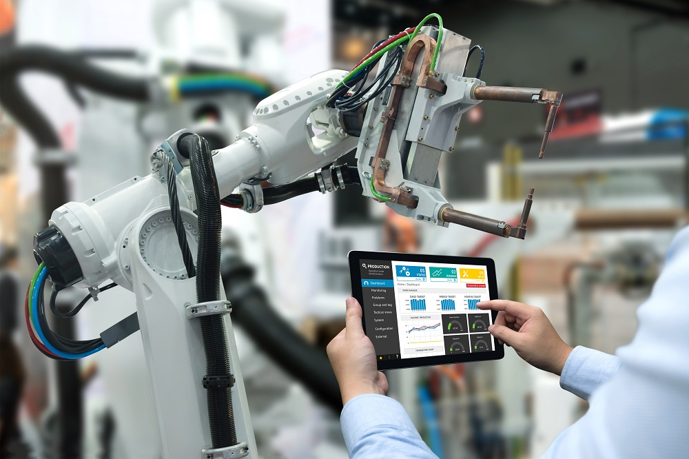

¿Qué es?
La inteligencia artificial (IA) reúne sistemas informáticos capaces de realizar tareas que normalmente requieren capacidades humanas, como reconocer imágenes, entender el lenguaje, hacer predicciones o recomendar decisiones. Estos sistemas aprenden a partir de grandes cantidades de datos.
La automatización consiste en usar máquinas o software para ejecutar tareas repetitivas con poca intervención humana, por ejemplo, una línea de ensamblaje o el envío automático de facturas. Cuando se combina con IA, la automatización deja de seguir solo reglas fijas y puede adaptarse a situaciones cambiantes.
Usos actuales
Hoy estas tecnologías están presentes en herramientas que muchas personas usan a diario, muchas veces sin notarlo. Algunos de los usos más comunes son:
- Asistentes virtuales y chatbots que responden preguntas de clientes.
- Recomendaciones de series, música y productos en plataformas digitales.
- Traducción automática y reconocimiento de voz.
- Detección de fraudes en transacciones bancarias.
- Robots y sistemas de control en fábricas y almacenes.
- Generación de texto, imágenes y código de programación.
Beneficios
El principal beneficio es que permiten hacer más trabajo en menos tiempo y con mayor consistencia, liberando a las personas para tareas que requieren criterio o creatividad.
- Ahorro de tiempo en tareas repetitivas.
- Reducción de errores en procesos rutinarios.
- Disponibilidad continua, por ejemplo en la atención al cliente.
- Análisis de grandes volúmenes de datos que una persona no podría revisar.
- Apoyo en áreas como la salud y la educación.
Riesgos
Junto con sus ventajas, la IA y la automatización plantean desafíos que la sociedad debe manejar con responsabilidad. Por eso organismos internacionales y gobiernos han propuesto marcos éticos y normas para regular su uso.
- Pérdida o transformación de puestos de trabajo que se pueden automatizar.
- Sesgos y discriminación, si los datos con que se entrena un sistema no son representativos.
- Privacidad y uso indebido de datos personales.
- Desinformación, por ejemplo, con imágenes o voces falsas creadas con IA.
- Exceso de confianza en resultados que pueden ser incorrectos y necesitan supervisión humana.
Aplicaciones por sector

| Sector | Aplicación | Ejemplo |
|---|---|---|
| Salud | Apoyo al análisis de imágenes médicas y a la programación de citas | Programas que ayudan a detectar anomalías en radiografías |
| Educación | Ejercicios adaptados al ritmo de cada estudiante | Tutores virtuales y corrección automática de cuestionarios |
| Industria | Robots y control de procesos de producción | Brazos robóticos en una línea de ensamblaje |
| Finanzas | Detección de fraude y análisis de riesgo | Alertas por compras sospechosas en una tarjeta |
| Atención al cliente | Asistentes virtuales que responden consultas frecuentes | Chatbots de empresas disponibles las 24 horas |